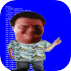
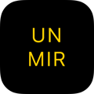

Ah! Ah! Ah!
A customizable unlock error alarm, inspired by Jurassic Park.
Designed for iOS 7. Available for free in Cydia.
BigBubbles
Bigger image bubbles for the Messages app.
Designed for iOS 6-7. Available for free in Cydia.
CCMeters
System meters for the Control Center and Notification Center.
Designed for iOS 7. Available for free in Cydia.
Notific8
An iOS 8 makeover for the Notification Center.
Designed for iOS 7. Available for free in Cydia.

Front Camera Un-Mirror
Flips the preview image from the front-facing camera.
Designed for iOS 7. Beta version on my repo.
PageNames
Cuz page dots are so meh.
Upcoming tweak.
StatusFlow
A live spectrum analyzer for the status bar.
Upcoming tweak.
hmm, what else?
(c) 2014 Sticktron.